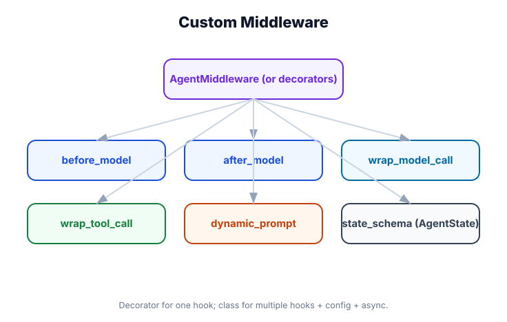

Custom Middleware — Three Complete Examples
What you'll learn: How to build three production-grade custom middleware: a tenant-aware dynamic prompt injector, a cost-tracking middleware that logs token usage per user, and a circuit breaker that stops the agent when it detects repeated failures.

↗ Open full size · ⬇ Edit in Excalidraw — labels use real LangChain classes.
Example 1: Tenant-Aware Prompt Injector
Multi-tenant SaaS apps need to customize agent behavior per customer — different system prompts, tone, allowed tools, or data access scope. This middleware reads the tenant config from the context and injects it as the system prompt.
from langchain.agents.middleware import AgentMiddleware
from langchain.agents.middleware import dynamic_prompt, before_model
from langchain_core.messages import SystemMessage
# Simulated tenant config store
TENANT_CONFIGS = {
"acme-corp": {
"company_name": "Acme Corporation",
"tone": "formal",
"allowed_topics": ["finance", "legal", "operations"],
"forbidden_words": ["competitor_x", "competitor_y"],
},
"startup-inc": {
"company_name": "Startup Inc",
"tone": "casual and friendly",
"allowed_topics": ["product", "marketing", "engineering"],
"forbidden_words": [],
},
}
class TenantMiddleware(AgentMiddleware):
"""Injects tenant-specific configuration as a system prompt."""
@dynamic_prompt
def inject_tenant_prompt(self, state, context) -> str:
tenant_id = context.get("tenant_id", "default")
config = TENANT_CONFIGS.get(tenant_id, {})
company = config.get("company_name", "the company")
tone = config.get("tone", "professional")
topics = ", ".join(config.get("allowed_topics", ["general queries"]))
return (
f"You are an AI assistant for {company}. "
f"Use a {tone} tone. "
f"You can help with: {topics}. "
f"If asked about something outside these areas, politely redirect. "
f"Always represent {company}'s values and brand voice."
)
@before_model
def filter_forbidden_words(self, messages):
"""Remove or warn about forbidden brand terms."""
tenant_id = self._context.get("tenant_id", "default")
config = TENANT_CONFIGS.get(tenant_id, {})
forbidden = config.get("forbidden_words", [])
if not forbidden:
return messages
filtered = []
for msg in messages:
content = msg.content if isinstance(msg.content, str) else str(msg.content)
for word in forbidden:
if word.lower() in content.lower():
content = content.replace(word, "[COMPETITOR]")
# Reconstruct message with filtered content (simplified)
filtered.append(msg.copy(update={"content": content}))
return filtered
# ── Usage ──────────────────────────────────────────────────────────────────────
from pydantic import BaseModel
class TenantContext(BaseModel):
tenant_id: str
user_id: str
from langchain.agents import create_agent
from langchain.chat_models import init_chat_model
agent = create_agent(
model=init_chat_model("openai:gpt-4o-mini"),
tools=[],
context_schema=TenantContext,
middleware=[TenantMiddleware()],
)
# Acme invocation
result = agent.invoke(
{"messages": [HumanMessage("Help me with quarterly finance reporting")]},
config={"configurable": {
"context": {"tenant_id": "acme-corp", "user_id": "alice"}
}},
)
Example 2: Token Cost Tracker
Understanding real API costs per user is critical for billing and cost optimization. This middleware intercepts model responses to extract token usage and log it.
from langchain.agents.middleware import AgentMiddleware
from langchain.agents.middleware import wrap_model_call
from collections import defaultdict
from datetime import datetime
# Pricing per 1M tokens (approximate, update as needed)
MODEL_PRICING = {
"gpt-4o": {"input": 5.00, "output": 15.00},
"gpt-4o-mini": {"input": 0.15, "output": 0.60},
"claude-sonnet-4-6": {"input": 3.00, "output": 15.00},
}
class CostTrackingMiddleware(AgentMiddleware):
"""Tracks token usage and estimated cost per user."""
def __init__(self, model_name: str = "gpt-4o-mini"):
self.model_name = model_name
self.usage_log: list[dict] = []
self.totals: dict[str, dict] = defaultdict(lambda: {"input": 0, "output": 0, "cost_usd": 0.0})
@wrap_model_call
async def track_usage(self, messages, next):
"""Wrap the model call to capture token usage."""
user_id = self._context.get("user_id", "anonymous")
# Execute the actual model call
response = await next(messages)
# Extract usage from response metadata
usage = getattr(response, "usage_metadata", None)
if usage:
input_tokens = usage.get("input_tokens", 0)
output_tokens = usage.get("output_tokens", 0)
# Calculate cost
pricing = MODEL_PRICING.get(self.model_name, {"input": 0, "output": 0})
cost = (input_tokens * pricing["input"] + output_tokens * pricing["output"]) / 1_000_000
# Log
entry = {
"user_id": user_id,
"timestamp": datetime.utcnow().isoformat(),
"input_tokens": input_tokens,
"output_tokens": output_tokens,
"cost_usd": round(cost, 6),
}
self.usage_log.append(entry)
# Accumulate totals
self.totals[user_id]["input"] += input_tokens
self.totals[user_id]["output"] += output_tokens
self.totals[user_id]["cost_usd"] += cost
return response
def get_user_cost(self, user_id: str) -> dict:
"""Get total cost for a user."""
return dict(self.totals.get(user_id, {"input": 0, "output": 0, "cost_usd": 0.0}))
def get_report(self) -> str:
"""Print a cost summary."""
lines = ["=== Cost Report ==="]
for uid, data in self.totals.items():
lines.append(f"{uid}: ${data['cost_usd']:.4f} "
f"({data['input']:,} in + {data['output']:,} out tokens)")
return "\n".join(lines)
# ── Usage ──────────────────────────────────────────────────────────────────────
tracker = CostTrackingMiddleware(model_name="gpt-4o-mini")
agent = create_agent(
model=init_chat_model("openai:gpt-4o-mini"),
tools=[],
middleware=[tracker],
)
# Run some queries
for user in ["alice", "bob", "alice"]:
agent.invoke(
{"messages": [HumanMessage("Explain quantum computing briefly")]},
config={"configurable": {"context": {"user_id": user}}},
)
print(tracker.get_report())
# === Cost Report ===
# alice: $0.000234 (1,234 in + 456 out tokens)
# bob: $0.000089 (678 in + 123 out tokens)Example 3: Circuit Breaker
A circuit breaker prevents an agent from running wild when something is clearly wrong. After N consecutive failures, it "opens" and rejects new calls until a cooldown period passes.
import time
from langchain.agents.middleware import AgentMiddleware
from langchain.agents.middleware import wrap_model_call, wrap_tool_call
class CircuitBreakerState:
CLOSED = "closed" # normal operation
OPEN = "open" # blocking all calls
HALF_OPEN = "half_open" # testing if recovery succeeded
class CircuitBreakerMiddleware(AgentMiddleware):
"""Stops the agent after repeated failures to prevent runaway execution."""
def __init__(
self,
failure_threshold: int = 3, # failures before opening
success_threshold: int = 1, # successes in half-open before closing
cooldown_seconds: float = 30.0,
):
self.failure_threshold = failure_threshold
self.success_threshold = success_threshold
self.cooldown = cooldown_seconds
self._state = CircuitBreakerState.CLOSED
self._failure_count = 0
self._success_count = 0
self._last_failure_time: float = 0
def _check_state(self):
"""Transition states based on timing."""
if self._state == CircuitBreakerState.OPEN:
if time.time() - self._last_failure_time >= self.cooldown:
self._state = CircuitBreakerState.HALF_OPEN
self._success_count = 0
if self._state != CircuitBreakerState.CLOSED:
raise RuntimeError(
f"Circuit breaker is {self._state}. "
f"Service unavailable — cooldown until "
f"{time.ctime(self._last_failure_time + self.cooldown)}"
)
def _record_success(self):
self._failure_count = 0
if self._state == CircuitBreakerState.HALF_OPEN:
self._success_count += 1
if self._success_count >= self.success_threshold:
self._state = CircuitBreakerState.CLOSED
def _record_failure(self):
self._failure_count += 1
self._last_failure_time = time.time()
if self._failure_count >= self.failure_threshold:
self._state = CircuitBreakerState.OPEN
@wrap_model_call
async def protect_model_call(self, messages, next):
self._check_state()
try:
result = await next(messages)
self._record_success()
return result
except Exception as e:
self._record_failure()
raise
@wrap_tool_call
async def protect_tool_call(self, tool_name, tool_args, next):
# Per-tool circuit breakers could be tracked separately
try:
result = await next(tool_args)
return result
except Exception as e:
self._record_failure()
raise
# ── Usage ──────────────────────────────────────────────────────────────────────
breaker = CircuitBreakerMiddleware(
failure_threshold=3,
cooldown_seconds=60,
)
agent = create_agent(
model=init_chat_model("openai:gpt-4o-mini"),
tools=[],
middleware=[breaker],
)
# After 3 consecutive model failures:
# CircuitBreakerMiddleware raises RuntimeError immediately
# rather than making more expensive API callsMiddleware instances are created once and reused for every agent invocation. This means instance variables (like self._failure_count) are shared across all concurrent requests. For production, use thread-safe counters (threading.Lock) or store state in an external store (Redis) if you need per-user circuit breakers.
Inside middleware hooks, access the runtime context via self._context (injected automatically). Access the current agent state via self._state. These are only available during hook execution, not during __init__.
Real-World Use Case
🏭 Multi-Tenant SaaS Platform
A SaaS platform serving 500+ companies uses all three custom middleware types: TenantMiddleware ensures each company sees its own brand voice and topic restrictions; CostTrackingMiddleware bills each company based on their actual token usage; CircuitBreakerMiddleware prevents any single runaway conversation from exhausting the platform's API rate limits. Each middleware is instantiated once at startup and shared across all requests — only the context (which includes tenant_id) differs per request.
Custom middleware patterns: @dynamic_prompt for per-tenant prompts, @wrap_model_call for observability/protection wrapping, @wrap_tool_call for per-tool control. Access runtime context via self._context. Middleware state is shared — use locking or external stores for concurrent safety. Build middleware to handle cross-cutting concerns that don't belong in tools or business logic.